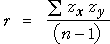

Definition
The correlation coefficient is usually defined by the formula
It is however easier to understand if written in terms of standardised versions of X and Y,

The correlation coefficient is a kind of average of the products of the z-scores.
How does r relate to the shape of a scatterplot?
The following properties of r explain in general terms how its value is related to the strength of a relationship in any particular scatterplot.
 |
 |
 |
|
 |
 |
| −1 ≤ r ≤ +1 | |